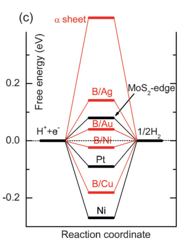

It states that a good catalyst material should bind the molecules that participate in the chemical reaction neither too strongly nor too weakly to its surface. The bonds should be strong enough to activate the molecules for the reaction, but still weak enough to not hold on to them forever. Unfortunately, many materials follow so-called scaling relations. They tend to bind different molecules either all stronger or all weaker, while for many reactions catalysts are needed that selectively bind certain molecules stronger and others weaker.
| Group | TS(eV) | T{\Delta}S | E_{ZPE} | {\Delta}E_{ZPE} |
|---|---|---|---|---|
| H2O(0.035bar) | 0.67 | 0 | 0.56 | 0 |
| *OH+1/2H2 | 0.20 | -0.47 | 0.44 | -0.12 |
| *O+H2 | 0.41 | -0.27 | 0.34 | -0.22 |
| 1/2O2+H2 | 0.73 | 0.05 | 0.32 | -0.24 |
| H2 | 0.41 | 0.27 | ||
| 1/2O2 | 0.32 | 0.05 | ||
| O* | 0 | 0.07 | ||
| OH* | 0 | 0.30 | ||
| H* | 0 | 0.17 |
2H(aq)^++2e^-{\rightarrow}H_2(g)
2H_2O+2e^-{\rightarrow}H_2(g)+2OH(aq)^-
The electrocatalytic activity of a given material for HER can be closely correlated to the adsorption energy of a single H atom on the surface of the material. According to basic Sabatier principle, with the free energy of adsorbed H on the catalyst usually required to be close to that of the product. Therefore, the value of free energy of H* (\Delta G_{H*}) of a site is usually viewed as a reliable indicator of the degree of catalytic activity of the site in question toward HER, where a smaller absolute value of \Delta G_{H*} means a better catalytic activity toward HER.[1]
The related free energies can be computed by the formula \Delta G_{H*}=\Delta E_{H*}-\Delta ZPE-T\Delta S, in which \Delta E_{H*}, \Delta ZPE and \Delta S are the binding energy, zero point energy change and entropy change of H* adsorption, respectively. The differential hydrogen adsorption energy \Delta E_{H*} is defined as follows, {\Delta}E_H*=E_{system+nH}-E_{system+(n-1)H}-1/2E_{H_2}, where E_{system+nH} is the total DFT energy for the system with n hydrogen atoms adsorbed, E_{system+(n-1)H} is the total DFT energy for (n-1) hydrogen atoms adsorbed and E_{H_2} is the DFT energy for a hydrogen molecule in the gas phase. The differential hydrogen binding energy describes the energy needed to increase the coverage by one hydrogen atom. In this work, we computed the T\Delta S and \Delta ZPE according to the scheme proposed by Norskov et al.[1] Specifically, \Delta S was obtained by using the equation \Delta S=S(H*)-1/2S(H_2)\approx -1/2S^0(H_2), as the configurational and vibrational entropy of H* is negligible. Since TS(H_2) is 0.41 eV for H2 at at standard conditions (298.15 K and 1 atm), the corresponding T\Delta S was obtained to be -0.205 eV. On the other hand, the equation \Delta ZPE=ZPE(H*)-1/2ZPE(H_2)(ZPE(H_2)=0.27eV) was employed to calculate \Delta ZPE for H*. It is worth mentioning here that our computed ZPE(H2) value was about 0.288 eV, close to the value reported by Norskov et al. for a similar system.[1]

Fig. 2: Free-energy diagram for hydrogen evolution reaction on different catalysts. The free energy of H++ e- is defined as the same as that of 1/2H2 at room temperature and standard conditions[3].
1/2O_2+H^++e^-\rightarrow 1/2H_2O_2\ (U_0^{O_2/H_2O_2} =0.7\ V\ vs.\ RHE) 1/4O_2(g)+H^++e^-\rightarrow 1/2H_2O\ (U_0^{O_2/H_2O} =1.229\ V\ vs.\ RHE (pH=0) 1/4O_2(g)+1/2H_2O-\rightarrow OH^-\ (U_0^{O_2/H_2O} =0.41\ V\ vs.\ RHE (pH=14)
In acidic solution: O_2(g) + H^++e^-+^*\rightarrow OOH^*\ (17) OOH^* + H^++e^-\rightarrow O^*+H_2O\ (18) O^*+H^++e^-\rightarrow OH^*\ (19) OH^*+H^++e^-\rightarrow H_2O + ^*\ (20)
The OER occurring in an alkaline electrolyte (pH = 14) through elementary steps takes the reverse direction of ORR: OH^-+* \rightarrow OH ^*+e^-\ (13) OH^*+OH^-\rightarrow O^*+H_2O(l)+e^-\ (14) O^*+OH^-\rightarrow OOH^*+e^-\ (15) OOH^*+OH^-\rightarrow O_2(g) + H_2O(l)+e^-+^*\ (16)
As for HER, in an acid electrolyte (pH = 0), H+ can act as the proton donor, so the overall reaction scheme of the HER can be written as: H^++e^-+^*\leftrightarrow 1/2H_2(g)+* where the * represents the adsorption site.
| Group | E (eV) | ZPE-298.15*S_{vib}(eV) | G (eV) |
|---|---|---|---|
| H2O(0.035bar) | -14.2367 | 0.579-0.67[1] | -14.3277 |
| H2 | -6.7689 | 0.2679-0.41[1] | -6.9110 |
| O2 | — | — | -9.9134 |
| OH- | — | — | -10.8722+0.0592*pH |
| * | -242.2713 | — | -242.2713 |
| OH* | -252.7821 | 0.3914-0.0719 | -252.4626 |
| O* | -247.2320 | 0.0711-0.0591 | -247.2200 |
| OOH* | -257.0118 | 0.4688-0.1504 | -256.6934 |
\Delta{G_1}=\Delta G_{OOH^*}-4.92=3.866800-4.92=-1.0532 \Delta{G_2}=\Delta G_{O^*}-\Delta G_{OOH^*}=2.468-3.8668=-1.399 \Delta{G_3}=\Delta G_{OH^*}-\Delta G_{O^*}=0.6809-2.468=-1.7871 \Delta{G_4}=-\Delta G_{OH^*}=-0.6809 \Delta{G_5}=\Delta G_{OH^*}=0.6809 \Delta{G_6}=\Delta G_{O^*}-\Delta G_{OH^*}=1.7871 \Delta{G_7}=\Delta G_{OOH^*}-\Delta G_{O^*}=1.399 \Delta{G_8}=4.92-\Delta G_{OOH^*}=1.0532
{\Delta}G={\Delta}E+{\Delta}ZPE-T{\Delta}S+eU+{\Delta}G_{pH}
G_{OOH^*}=3.8668-0.7=3.1668 G_{O_2}=G_{H_2O_2}=3.52